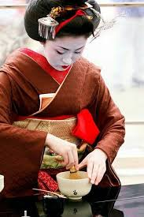
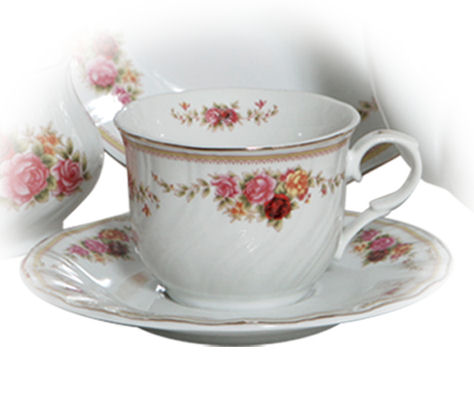
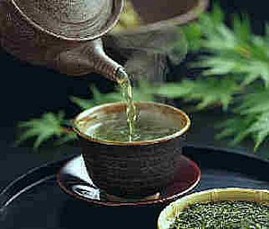
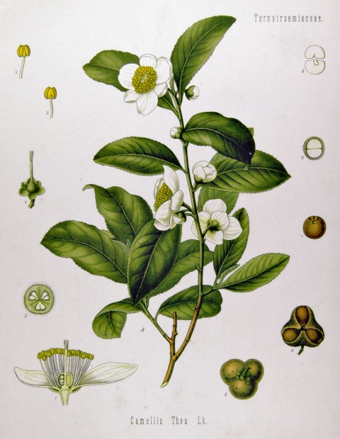
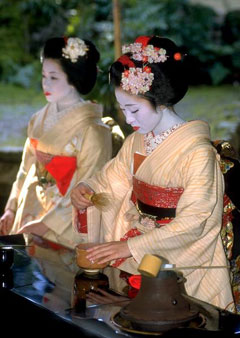

El te s'ha utilitzat des de l'antiguitat en l'Extrem Orient, i és una de les 50 plantes més utilitzades en la medicina tradicional xinesa. Aquesta llarga tradició oriental amb aquesta planta, fa que s'hagin desenvolupat moltes cerimònies
i rituals propis, com ara la cerimònia del te. El consum de te es va estendre per Europa a partir del segle xvii.
Actualment és la beguda més consumida en el món, per davant fins i tot del cafè i depenent del territori, es pot trobar diferents maneres de preparar el te, variant així les seves propietats segons la manera de preparar-lo.
Cultura del Te
Les cerimònies del te sorgeixen en diferents cultures, com les tradicions xinesa i japonesa, on cadascuna d'elles empra certes tècniques i un protocol ritualitzat de servir el te, en una recerca de fruïció i refinament.

Un forma de cerimònia xinesa del te és la cerimònia del te Gongfu, que acostuma a utilitzar petites teteres d'argila de Yixing i te oolong te. En el Regne Unit, un 63% de la població beu te a diari i es considera que és una de les
begudes culturals britàniques. És un costum habitual que l'amfitrió ofereixi te als seus convidats poc després de la seva arribada. El te es consumeix tant a dins com a fora de casa, sovint a cafeteries o salons de te. El te de
la tarda amb pastissos sobre porcellana fina és una manifestació d'un estereotip cultural. Al sud-oest d'Anglaterra, moltes cafeteries serveixen un te amb crema, que consisteix de scones, nata cuallada i melmelada, al costat d'una
gerra amb te. En algunes parts de Gran Bretanya i de l'Índia, 'te' també es pot referir a l'àpat del vespre. Irlanda, en 2016, era el segon consumidor mundial per càpita més gran de te. El te d'esmorzar irlandès és la mescla local
més popular. La mitjana nacional de consum és de quatre tasses per persona i dia, i moltes persones en beuen sis tasses o més. S'hi acostuma a beure amb llet o sucre. El te és molt present en cultures de l'Orient Mitjà.
En la cultura àrab, el te és un punt clau de les reunions socials. El te turc és una part important de la cuina d'aquest país, i és la beguda calenta més consumida, tot i la seva llarga història del país com a consumidor de cafè.
L'any 2004 Turquia va produir 205.500 tones de te (un 6,4% de la producció mundial), la qual cosa el va fer un dels mercats de te més grans en el món, amb 120.000 tones consumides dins Turquia, i la resta destinada a l'exportació.
En 2010 Turquia va tenir el consum per càpita més alt en el món, amb 2,7 kg. En 2013, el consum per càpita de te turc supera les 10 tasses per dia i els 13,8 kg per any.[36] El cultiu del te es concentra majoritàriament a la província de Rize, en la costa
del Mar Negre.
En la cultura iraniana, el te és tan àmpliament consumit, que és generalment la primera cosa que s'ofereix a un convidat a casa. Rússia té una llarga i rica història sobre el consum de te, que es remunta a 1638, quan el te va ser introduït al Tsar Miquel
I. Les reunions socials es consideraven incompletes sene el te, que tradicionalment es preparava en un samovar. Actualment, un 82% dels russos consumeixen te diàriament.
Al Pakistan, són populars tant el te negre com el te verd, coneguts com a sabz chai i kahwah, respectivament. El popular te verd anomenat kahwah s'acostuma a servir després de cada àpat en el cinturó paixtu de Balutxistan i en Khyber Pakhtunkhwa, on es
troba el pas de Khyber. En les regions central i del sud de Panjab, així com a l'àrea metropolitana de Sind, es consumeix de manera regular te amb llet i sucre (de vegades amb festucs, cardamom, etc.), generalment anomenat chai.
És la beguda més comuna de les llars. En les regions de Chitral i Gilgit-Baltistan, al nord del país, es consumeix un te amb mantega salat, a l'estil tibetà. A la regió transnacional del Caixmir, situada entre l'Índia i el Pakistan, es consumeix el noon
chai, un te cremós, rosat, amb festucs, ametlles, cardamom i de vegades canyella, principalment en ocasions especials, casaments, i durant els mesos d'hivern, moment en el qual es ven en molts quioscs.

El Te a la India. La cultura del te a l'Índia està força arrelada, ja que és la beguda calent més popular del país. Es consumeix a diari en gairebé totes les cases, s'ofereix als convidats, es consumeix en grans quantitats en els àmbits
domèstic i oficial, i es prepara amb llet i amb o sense espècies, i normalment edulcorat. A les llars, de vegades se serveix amb galetes per ser sucades en el te i menjades abans de consumir-lo. Sovint es serveix en tasses petites.
El 21 d'abril de 2012, el President Delegat de la Comissió de Planificació, Montek Singh Ahluwalia, va dir que el te seria declarat beguda nacional l'abril de 2013. S'espera que aquest moviment augmenti la indústria del te en el
país. Sobre aquest anunci, el Primer Ministre d'Assam Tarun Gogoi va dir que s'anunciaria un paquet especial per a la indústria del te, per tal d'assegurar el seu desenvolupament. A Myanmar, el te es consumeix no només com a beguda
calenta, sinó també com a te dolç i te verd, coneguts localment com a laphet-yay i laphet-yay-gyan, respectivament. Les fulles del te triturades, conegudes com a laphet, mbé són un menjar nacional. El te triturat es menja normalment
amb llavors torrades de sèsam, mongetes fregides cruixents, cacauets torrats i làmines d'all fregit.
A Mali, el te gunpowder es serveix en una sèrie de tres, començant amb el de més alta oxidació, o un te més fort i sense edulcorar, anomenat "fort com la mort", seguit per un segon, on les mateixes fulles de te es bullen un altre cop
amb una mica de sucre afegit ("agradable com la vida"), i un tercer servei, on les mateixes fulles de te són bullides un tercer cop amb més sucre afegit ("dolç com l'amor").
En els Estats Units, 80% del te és consumit en forma de te amb gel. El te dolç és natiu en el Sud-est dels Estats Units, i és icònic en la seva cuina.
La Camellia Sinensis o Thea Sinensis és l'arbust del que s'obtenen el Te Negre i el Te Verd. La diferència fonamental entre el Te Negre i el Te Verd, és que el Te Negre s'obté per un procés de fermentació que li dona un aspecte i sabor
diferenciat. Encara que els seu origen és asiàtic, avui en dia el Te es conrea gairebé en totes les regions tropicals i subtropicals del planeta, donant una infinitat de varietats. El Te Negre és passa per un procés d'elaboració
que consta de quatre etapes: marciment, enrotllat, fermentació i assecat. Aquesta forma d'elaboració és la que el diferencia d'altres Tes com el Verd, el Blanc o el Vermell.

PROPIETATS
Antioxidant
Com tots els diferents Tes, el Te Negre te un bona concentració de polifenols que actuen com a protectors contra els radicals lliures i ajuden a combatre l'envelliment i problemes cardiovasculars.
Astringent:
Al tenir una bona concentració de tanins, que son els que atorguen un sabor amarg, el seu consum és idoni per combatre la diarrea o la gastritis.
Diürètic:
El Te Negre col·labora significativament amb l'eliminació de líquids de l'organisme.
Reconfortant i baix en calories:
El Te Negre pràcticament no aporta calories, però si que dona la sensació de sacietat. És ideal per a reemplaçar altres begudes. Estimulant: Conté substàncies actives que actuen sobre el sistema nerviós central. Per aquest motiu, és
bo pels esmorzars i desdejunis.
Contraindicacions:
El seu contingut en teïna no el fa recomanable per als nens, les persones nervioses, insomnes o de son lleugera i en tots els casos en els que la persona nota que al estar nerviós li fa empitjorar el seu problema particular. No està recomanat en casos
d'úlceres o gastritis ja que pot activar la producció de sucs gàstrics.
Te Verd / Té Verde / Green Tea / Thé Vert / 緑茶
El Te Verd prové del Sud-Est asiàtic.
S'elabora amb fulles cuites al vapor i posteriorment assecades de la Camellia Sinensis. És un arbust de fulla perenne de la família Teacea, que pot arribar a fer de 5 a 10 m. d'alçada en estat salvatge, encara que quant es conrea no sol sobrepassar el
2 m d'alçada. Les seves lanceolades i agudes fulles son de color verd fosc i estan disposades de forma alterna. Fan entre 5 i 10 cm d'ample. Una de les característiques d'aquestes fulles és que son dentades en els seus 2/3 superiors.
Aquestes fulles son la part emprada amb fins terapèutics. Te unes delicades flors de color blanc crema o rosacis, que desprenen un agradable aroma. Son petits i es disposen de forma solitària o en grups de 2 o 3 flors.

Cada flor consta de 5 sèpals ovals i de 6 a 9 pètals. El fruit és una petita càpsula arrodonida que conté els fruits en el seu interior. Encara que originari del Sud-Est asiàtic (des de l'Índia i Sri Lanka fins a la Xina i el Japó),
el Te creix en extenses regions tropicals i subtropicals. En les proximitats de l'equador terrestre poden trobar-se fins a una altitud de, gairebé, 2,000 metres. Depenent de l'origen del Te, les condicions climàtiques varien i
aquesta és la raó de que existeixen diferents varietats de Te Verd, cadascun amb unes característiques peculiars, tant pel que fa a l'olor, el gust i el color de la infusió preparada. La recol·lecció te lloc quant la planta arriba
a una edat de 3 anys. Normalment, hi ha 3 collites. Es recol·lecten els brots joves que estan formats per 5 o 6 fulles disposades al voltant d'una gemma terminal tancada.
Propietats:
Posseeix propietats antioxidants, anticancerígenes i, fins i tot, antibiòtiques. Redueix la síntesi del colesterol dolent o LAL a nivell hepàtic. Redueix la inflamació de les articulacions en episodis aguts d'artritis. Controla el
nivell de glucosa en sang, prevenint l'aparició de diabetis. Redueix els símptomes de la menopausa com l'acalorament i les alteracions del somni. Dins dels seus components posseeix sals minerals de potassi, fòsfor, magnesi, ferro,
zinc, fluor i crom. Vitamines A, C i E. Es beneficiós per les genives i les dents, afavorint la salud dental.
Contraindicacions:
Insomni.
Hipertensió arterial.
Embaràs i lactància.
Anèmia.
Carència de ferro.
Les persones amb problemes d'anèmia i de carència de ferro, es preferible que no prenguin aquesta infusió fins 2 hores després dels àpats.
Te Vermell / Té Rojo / Pu-erh Tea / Thé Pu-erh / 普洱茶
El Te Vermell és un Te Verd sotmès a un llarg procés de fermentació en botes de roure a les coves de la regió xinesa de Pu-erh. Aquesta fermentació es produeix gràcies a uns micro-organismes presents en el procés. Aquesta llarga fermentació,
de uns 50 anys, explica les peculiars propietats d'aquesta varietat de tes. El Te Vermell s'obté d'una varietat de la Camellia Sinensis (茶花 Pinyin Cháhuā) anomenada “de fulla ample” (大叶, dà yè).

Les fulles estan cobertes de fins pèls i són més grans que altres fulles de te, a més de tenir una composició química diferent. Les fulles dels arbres solen créixer salvatges en el que es denominen "muntanyes de te" i solen ser molt
valuoses; de vegades, els bons coneixedors del pu-erh busquen les fulles preses dels boscos salvatges de només una sola "muntanya del te", sense barrejar amb les fulles de qualsevol altra àrea. Sovint el pu-erh es presenta al consumidor
en forma de coques o petits maons, s'embolica en escorces de paper o d'aranja, i s'emmagatzema lluny de la humitat excessiva, de la calor i de la llum del sol perquè maduri més temps. Després de ser emmagatzemat durant alguns anys,
el te adquireix característiques més fosques, més suaus que provenen de la seva edat. Aquesta característica del pu-erh es va originar probablement del procés natural de l'envelliment que va succeir al llarg de les rutes de les
antigues caravanes.
Propietats
És un excel·lent aliat de la bona salut. Entre les seves grans propietats, hi podem destacar:
Redueix el colesterol dolent en sang. Ajuda a perdre pes. Col·labora amb la digestió. Antioxidant Diürètic.
Contra-indicacions
Carència de ferro: És millor prendre'l dues hores després dels àpats. Hipertensió alta: És millor no prendre'l. Hi ha varietats sense teïna.